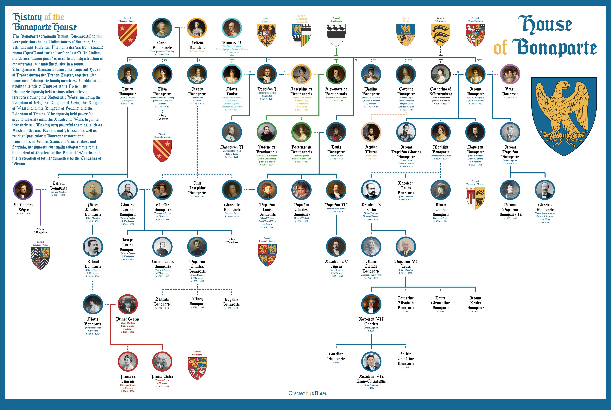

Background info of his Corsican Nationalism Family
As we all know, Napoleon is from a place which wasn't belonging to France. Something that you didn’t learn from social studies is, Napoleon’s family, or Bonaparte family, was originally Corsican independence influencer. They were Corsican Nationalism. They also had a high social status as a Corsican Noble. France capturing Corsica changed their family, this happened one year before Napoleon was born. Most of the Nobles escaped to Italy at that time. However, the Napoleon family claimed their allegiance to France, so they became a French Noble.
Image from Reddit
Napoleon is an opportunist
Napoleon didn’t have any political ideologies, which is rare as a succeeded politician. When he was young, he supported French Revolution because they said they will give Corsica independence. He had a relationship with Pasquale Paoli, who was an influencer of Corsica independent. A few sources even narrated Napoleon had declared that “only the belt belongs to France, the sword is mine”. However, after the Bonaparte family started to have a conflict with Pasquale Paoli, he became more and more allegiant to France. Which shows that Napoleon is Opportunism. If he is not opportunism, he would stick with his standpoint and fight for the independent.
Turning back the wheel of history
Napoleon made the history backwards. What I mean by this is Napoleon abandoned some benifitial stuff to the people that France originally have. For example democracy. Of course, this is for a purpose. By doing this, Napoleon can maintain his dictatorship, so that no one will be more powerful than him. During the Napoleon's rule, anyone who says bad things about Napoleon will be punished. Newspaper office who spread adverse information to Napoleon will be taken down by the cops. People were hardly brainwashed by the propaganda because there's nobody who spreads the opposite information to the mainstream thought.
The French Directory is a advanced politician power. It's advanced level is beyond most of the modern power. However, Napoleon took over the Directory and became the emperor. Which is the same as the Louis rule. One thing that is different between former Louis XVI government and Napoleon government is Napoleon gave himself more and more power by taking away the power of upper level people. A state that is monarchy is consider as conservative. Imagine the Jacobins worked so hard for giving France bunches progressive stuff, and Napoleon destroyed it with his own hands.

Unequal rights
Napoleonic Code, or the Code Civil, was introduced to let France having the same law. Before the code, every region in France has its own specific law, compiled by it's coutumes.
The Code has a significant amount of unfair rights. For examples:
Women can't vote
Women's properties are controlling by their husbands
Unmarried women and children almost have no rights
Men have the legal rights to kill their wife for affair, for women it's illegal.
Failure who escaped the battle
Napoleon started the war with Egypt, half independent state from Ottoman Empire. After captured Egypt, Napoleon started to attack to the north. But for some unfavorable reasons, loser Napoleon left his whole army in Middle East and ran back to his home country.
Similar thing happened in the battle of Russia. Loser Napoleon got approx. 3 times of soldier amount to Russia, but still failed the war.